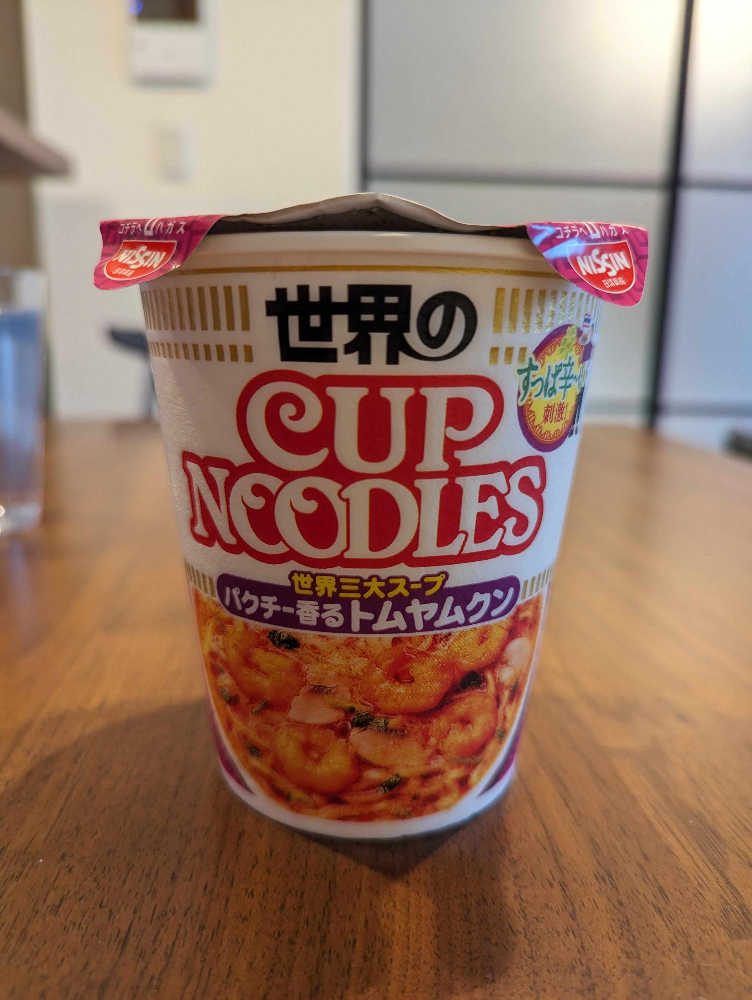

今日もカップヌードルを食べた。トムヤムクン。
このトムヤムクンはかなり本格的な味で、酸味と辛味、パクチーの風味が意外なほどカップヌードルのチープな麺に合うのだ。正直辛すぎるけど、かなり好きな味だ。
昔渋谷でタイ料理の店に連れて行ってもらったことがある。その時はタイ料理を食べたことがなくて、単に定番だからと誰かが頼んだトムヤムクンをもらって食べた。その時も、確か辛すぎて食べられなかった記憶がある。暑い夏だった。
このカップヌードルは、あの夏を想起させる。トムヤムクンは人生であの夏のタイ料理屋とカップヌードル以外食べたことがないので、正直本格的とかはわからないけど、今後もっと食べていきたい。
今日は最近やっていた仕事が一段落したので良い日だ。